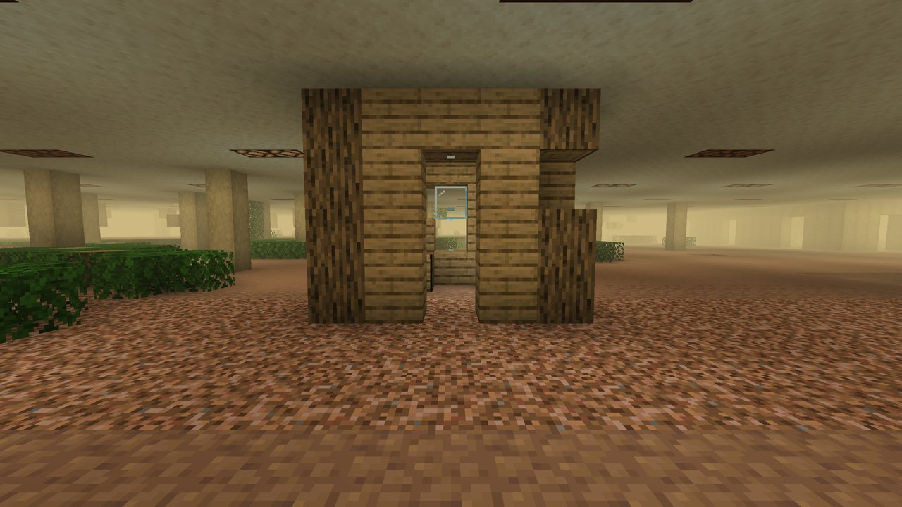
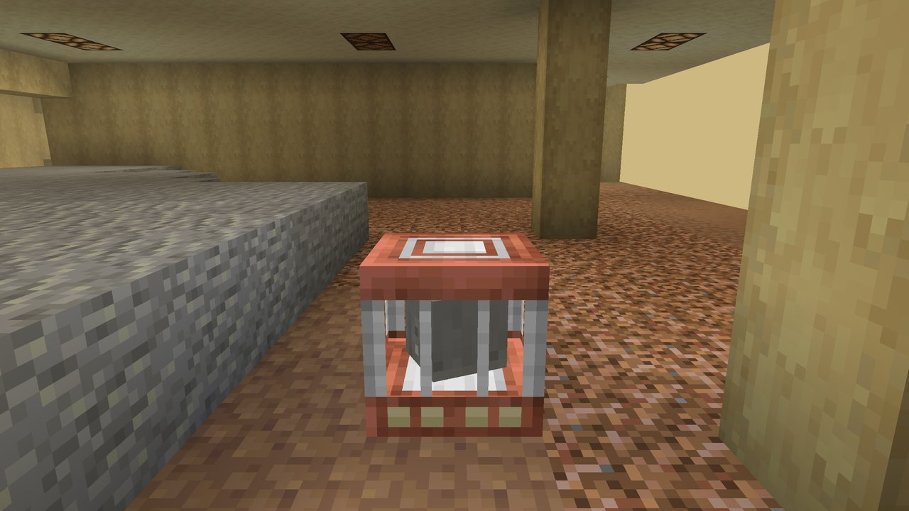

Home » The dimension » Rules of the dimension
Rules of the dimension
The Remembering is not built of real blocks. It has its own rules, and learning them is most of surviving there.
Everything is a copy#
Almost every block The Remembering generates is a copy. Copies follow their own rules:
- Any tool breaks them, but only Memarium tools break them at normal speed. Anything else gets a hidden Mining Fatigue II and works at about a tenth of the speed.
- Copies drop nothing when broken.
- Explosions do not break copies.
- Blocks you place there yourself are not copies: they break and drop normally, like anywhere else. So do Memarium ore and the vanilla pieces inside misremembered places.
- Nether portals and End portals cannot be lit or used inside. Only doors work.
Memarium#
The Remembering never remembers ore, because the builders took it all. Where ore was, it leaves a hole, and now and then, as a whole vein, it fills it with Memarium, the only metal it makes.
- Memarium ore comes in four kinds:
 Memarium Ore,
Memarium Ore,  Deepslate Memarium Ore,
Deepslate Memarium Ore,  Nether Memarium Ore and
Nether Memarium Ore and  End Memarium Ore.
End Memarium Ore. - It drops
 Raw Memarium (or the ore with Silk Touch). Smelt or blast it into a
Raw Memarium (or the ore with Silk Touch). Smelt or blast it into a  Memarium Ingot.
Memarium Ingot. - Veins are rare and there is never a lone block of it. In the geometric level they sit in thick floors.
Memarium tools and drops#
Memarium tools are diamond tools upgraded at a smithing table with a Remembered Upgrade and a Memarium Ingot (recipes). They are the key to The Remembering, not a better pickaxe:
- Inside, they are the only tools that cut copies at full speed.
- What they cut breaks into nothing, almost always. Now and then a block drops: the rarer the block, the rarer the drop. A dirt block drops one time in five, a diamond block one time in a thousand. Settled blocks and Settled Lichen always drop. Servers can turn the chance up or down with
memariumDropMultiplierin the config. - Outside The Remembering, Memarium tools mine at only 18% of their speed and wear 5 extra durability per block. Keep your netherite for the overworld.
- They have diamond's speed and damage and netherite's durability (2031 uses).
Memarium armor
Memarium armor is a little better than netherite everywhere and much better inside The Remembering.
Copies of your builds#
The Remembering copies what players build. Blocks you place or break in the overworld show up at the same x, y and z in The Remembering, a little wrong, while nobody there is looking:
- Some of the copied blocks are lost, and some are remembered as a plainer version of themselves.
- Thin blocks, blocks with contents (chests, furnaces), door rooms, floors and lamps are left alone.
- Finding one of your own builds in there gives the advancement It's Copying Me.
- Server owners can turn it off with
remembering.copyBuilds.

Mobs that wander in#
Vanilla mobs that enter The Remembering are remembered wrong as soon as they arrive: hostile mobs turn into Vivids, animals and villagers into Hollow statues. Some mobs are refused and simply do not come in.
Insanity#
The longer you stay inside, the more your mind goes. It has its own page: Insanity.
Death and leaving#
- Dying inside: you respawn at your spawn point, and your insanity is cleared. Beds and respawn anchors don't work in there; they blow up, like a bed in the Nether.
- Items enchanted with Keeping stay with you through death. Items with Curse of Fading vanish when their holder leaves The Remembering.
/backrooms leavetakes you out, with a cooldown.
Respawning inside: the Stand-In#
Beds and respawn anchors don't work in The Remembering. The  Stand-In does the job instead: a copper cage that holds a grey copy of your head.
Stand-In does the job instead: a copper cage that holds a grey copy of your head.
- Charge it with Raw Memarium, one charge each, up to 4.
- Use it with a charge in it and your respawn point is set there. Your head appears in the cage, washed grey, and turns slowly while it still has charge.
- Empty, it does nothing at all: no message, no spawn.
- Each time you respawn at it, one charge is used. With none left you go back to world spawn.
- Outside The Remembering it does nothing: "It doesn't remember this place."
- Its copper weathers like a copper block. Wax it with honeycomb to keep its look, scrape it with an axe.
- Copper, Memarium and iron ingots around an armor stand (recipe).
